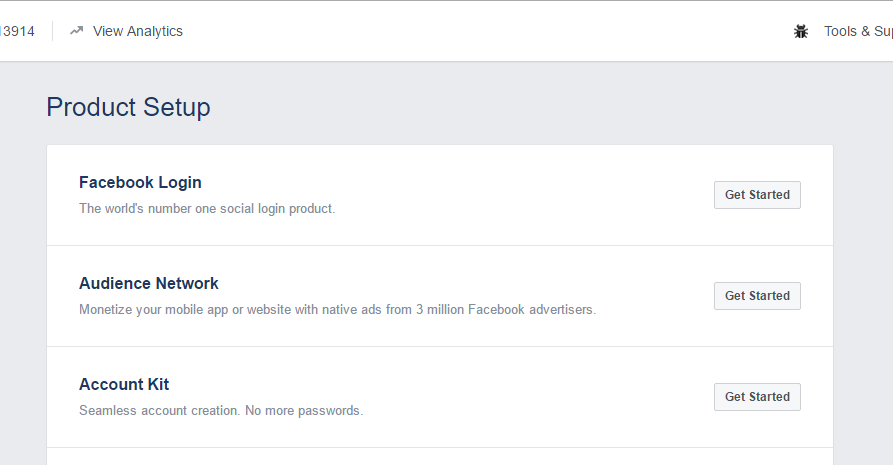
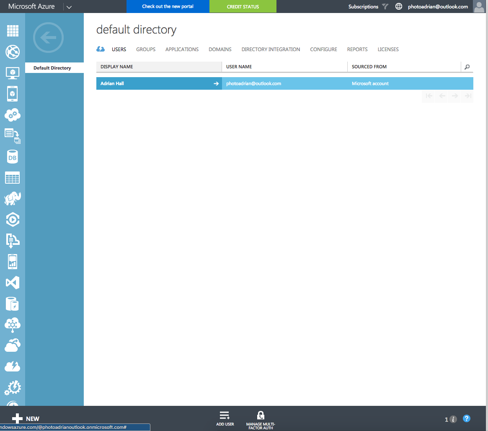

Authentication
One of the very first things you will want to do is to provide users with a unique experience. For our example task list application, this could be as simple as providing a task list for the user who is logged in. In more complex applications, this is the gateway to role-based access controls, group rules, and sharing with your friends. In all these cases, properly identifying the user using the phone is the starting point.
Authentication Concepts
Authentication provides a process by which the user that is using the mobile device can be identified securely. This is generally done by entering a username and password. However, modern systems can also provide multi-factor authentication, send you a text message to a registered device, or use your fingerprint as the password.
The OAuth Process
In just about every single mobile application, a process called OAuth is used to properly identify a user to the mobile backend. OAuth is not an authentication mechanism in its own right. It is used to route the authentication request to the right place and to verify that the authentication took place. There are three actors in the OAuth protocol:
- The Client is the application attempting to get access to the resource.
- The Resource is the mobile backend that the client is attempting to access.
- The Identity Provider (or IdP) is the service that is responsible for authenticating the client.
At the end of the process, a cryptographically signed token is minted. This token is added to every single subsequent request to identify the user.
Server Side vs. Client Side Authentication
There are two types of authentication flow: Server-Flow and Client-Flow. They are so named because of who controls the flow of the actual authentication.

Server-flow is named because the authentication flow is managed by the server through a web connection. It is generally used in two cases:
- You want a simple placeholder for authentication in your mobile app while you are developing other code.
- You are developing a web app.
In the case of Server Flow:
- The client brings up a web view and asks for the login page from the resource.
- The resource redirects the client to the identity provider.
- The identity provider does the authentication before redirecting the client back to the resource (with an identity provider token).
- The resource validates the identity provider token with the identity provider.
- Finally, the resource mints a new resource token that it returns to the client.
Client-flow authentication uses an IdP provided SDK to integrate a more native feel to the authentication flow. The actual flow happens on the client, communicating only with the IdP.
- The client uses the IdP SDK to communicate with the identity provider.
- The identity provider does the authentication, returning an identity provider token.
- The client presents the identity provider token to the resource.
- The resource validates the identity provider token with the identity provider.
- Finally, the resource mints a new resource token that it returns to the client.
For example, if you use the Facebook SDK for authentication, your app will seamlessly switch over into the Facebook app and ask you to authorize your client application before switching you back to your client application.
It is generally recommended that you use the IdP SDK when developing an app that will be released on the app store. This follows the best practice provided by the majority of identity providers and provides the best experience for your end users.
Authentication Providers
Azure Mobile Apps supports five identity providers natively:
- Azure Active Directory
- Microsoft (MSA)
In addition, you can set up client-flow custom authentication that allows you to mint a ZUMO token to your specifications for any provider using a client-flow. For example, you could use authentication providers like Azure AD B2C, LinkedIn or GitHub, a third-party authentication provider like Auth0, or you could set up an identity table in your database so that you can check username and password without an identity provider.
Adding Authentication to a Mobile Backend
Adding authentication to an Azure Mobile Apps backend is made easier because
Azure Mobile Apps adds authentication using the default ASP.NET identity
framework. However, you must add the authentication initialization code to
your Startup.MobileApp.cs file:
public static void ConfigureMobileApp(IAppBuilder app)
{
HttpConfiguration config = new HttpConfiguration();
new MobileAppConfiguration()
.AddTablesWithEntityFramework()
.ApplyTo(config);
// Use Entity Framework Code First to create database tables based on your DbContext
Database.SetInitializer(new MobileServiceInitializer());
MobileAppSettingsDictionary settings = config.GetMobileAppSettingsProvider().GetMobileAppSettings();
if (string.IsNullOrEmpty(settings.HostName))
{
app.UseAppServiceAuthentication(new AppServiceAuthenticationOptions
{
// This middleware is intended to be used locally for debugging. By default, HostName will
// only have a value when running in an App Service application.
SigningKey = ConfigurationManager.AppSettings["SigningKey"],
ValidAudiences = new[] { ConfigurationManager.AppSettings["ValidAudience"] },
ValidIssuers = new[] { ConfigurationManager.AppSettings["ValidIssuer"] },
TokenHandler = config.GetAppServiceTokenHandler()
});
}
app.UseWebApi(config);
}
Authentication is done at one of two levels. We can add
authentication to an entire table controller by adding the [Authorize]
attribute to the table controller. We can also add authentication on
individual operations by adding the [Authorize] attribute to individual
methods within the table controller. For example, here is our table controller
from the first chapter with authentication required for all operations:
using System.Linq;
using System.Threading.Tasks;
using System.Web.Http;
using System.Web.Http.Controllers;
using System.Web.Http.OData;
using Backend.DataObjects;
using Backend.Models;
using Microsoft.Azure.Mobile.Server;
namespace Backend.Controllers
{
[Authorize]
public class TodoItemController : TableController<TodoItem>
{
protected override void Initialize(HttpControllerContext controllerContext)
{
base.Initialize(controllerContext);
MobileServiceContext context = new MobileServiceContext();
DomainManager = new EntityDomainManager<TodoItem>(context, Request);
}
// GET tables/TodoItem
public IQueryable<TodoItem> GetAllTodoItems() => Query();
// GET tables/TodoItem/48D68C86-6EA6-4C25-AA33-223FC9A27959
public SingleResult<TodoItem> GetTodoItem(string id) => Lookup(id);
// PATCH tables/TodoItem/48D68C86-6EA6-4C25-AA33-223FC9A27959
public Task<TodoItem> PatchTodoItem(string id, Delta<TodoItem> patch) => UpdateAsync(id, patch);
// POST tables/TodoItem
public async Task<IHttpActionResult> PostTodoItem(TodoItem item)
{
TodoItem current = await InsertAsync(item);
return CreatedAtRoute("Tables", new { id = current.Id }, current);
}
// DELETE tables/TodoItem/48D68C86-6EA6-4C25-AA33-223FC9A27959
public Task DeleteTodoItem(string id) => DeleteAsync(id);
}
}
We could also have a version where reading was possible anonymously but updating the database required authentication:
using System.Linq;
using System.Threading.Tasks;
using System.Web.Http;
using System.Web.Http.Controllers;
using System.Web.Http.OData;
using Backend.DataObjects;
using Backend.Models;
using Microsoft.Azure.Mobile.Server;
namespace Backend.Controllers
{
public class TodoItemController : TableController<TodoItem>
{
protected override void Initialize(HttpControllerContext controllerContext)
{
base.Initialize(controllerContext);
MobileServiceContext context = new MobileServiceContext();
DomainManager = new EntityDomainManager<TodoItem>(context, Request);
}
// GET tables/TodoItem
public IQueryable<TodoItem> GetAllTodoItems() => Query();
// GET tables/TodoItem/48D68C86-6EA6-4C25-AA33-223FC9A27959
public SingleResult<TodoItem> GetTodoItem(string id) => Lookup(id);
// PATCH tables/TodoItem/48D68C86-6EA6-4C25-AA33-223FC9A27959
[Authorize]
public Task<TodoItem> PatchTodoItem(string id, Delta<TodoItem> patch) => UpdateAsync(id, patch);
// POST tables/TodoItem
[Authorize]
public async Task<IHttpActionResult> PostTodoItem(TodoItem item)
{
TodoItem current = await InsertAsync(item);
return CreatedAtRoute("Tables", new { id = current.Id }, current);
}
// DELETE tables/TodoItem/48D68C86-6EA6-4C25-AA33-223FC9A27959
[Authorize]
public Task DeleteTodoItem(string id) => DeleteAsync(id);
}
}
Note that the [Authorize] attribute can do so much more than what is provided
here. Underneath there are various parameters that you can adjust to see if the
user belongs to a specific group or role. However, the token that is checked
to see if the user is authenticated does not pull in any of the other information
that is normally needed for such authorization tasks. As a result, the [Authorize]
tags is really only checking authentication - not authorization.
Social Authentication
Azure App Service provides built-in support for Facebook, Google, Microsoft and Twitter. Irrespective of whether you intend to use server-flow or client-flow, you will need to configure the Azure App Service Authentication service. In general, the method involves:
- Obtain a Developer Account for the provider.
- Create a new application, obtaining a Client ID and Secret.
- Turn on Azure App Service Authentication.
- Enter the Client ID and Secret into the specific provider setup.
- Save the configuration.
Before you start any of this, create a new Azure Mobile Apps as we described in Chapter 1. If you want a site to deploy for the configuration, the Backend project in the Chapter2 solution is pre-configured for authorization. You just need to deploy it to Azure App Service.
Facebook Authentication
I'm going to assume you have a Facebook account already. If you don't, go to Facebook and sign up. All your friends are likely there already! Now log in to the Facebook Developers web site. Let's create a new Facebook application:

Note: Facebook updates the look and feel of their developer site on a regular basis. As a result, the screen shots I've provided here may be different. If in doubt, follow the bullet descriptions to find your way.
If you are not already registered, click on the drop-down in the top-right corner and Register as a Developer before continuing.
- Click on the My Apps link in the top right corner of the screen.
- Click on Create a New App.
- Fill in the form:

-
If required, verify your account according to the instructions. This usually involves adding a credit card number or verifying your mobile phone number.
-
Click on the Get Started button next to Facebook Login.

- Enter your application URL +
/.auth/login/facebook/callbackin the Valid OAuth redirect URIs.

Note that you may not be able to use SSL if you are using the certain plans such as the F1 Free App Service Plan. Some identity providers only allow SSL redirects. You can upgrade the App Service Plan to a B1 Basic in this case.
- Click on Save Changes.
- Click on the Settings -> Basic in the left hand side-bar.
- Click on the Show button next to the App Secret
Now that you have the App ID and App Secret, you can continue configuration of your app within the Azure Portal.
- Open up your App Service by clicking on All Resources or App Services followed by the name of your app service.
- In the Settings blade, click on Authentication / Authorization which is under Features.
- Turn App Service Authentication to On.
- In the Action to take when request is not authenticated, select Allow Request (no action).
It's very tempting to choose Log in with Facebook. However, you need to avoid this. Selecting this option will mean that all requests need to be authenticated and you won't get the information on the back end. Selecting Allow Request means your app is in charge of what gets authenticated and what does not require authentication.
- Click on Facebook (which should show Not Configured).
- Cut and Paste the App ID and App Secret into the boxes provided.
- Select public_profile and email for Scopes.
Note that if you request anything but public_profile, user_friends, and email, your app will need further review by Facebook, which will take time. This process is not worth it for test apps like this one.
- Click on OK (at the bottom of the blade) to close the Facebook configuration blade.
- Click on Save (at the top of the blade) to save your Authentication changes.
You can test your authentication process by browsing to https://yoursite.azurewebsites.net/.auth/login/facebook; this is the same endpoint that the Azure Mobile Apps Client SDK calls when it is time to integrate authentication into the mobile client.

If you are not logged in to facebook already, you will be prompted for your facebook credentials first. Finally, here is your happy page - the page that signifies you have done everything right:

Minimal Permissions Every single OAuth provider will ask you what sort of information you want to have access to. These "claims" translate into permissions. The more permissions you request, the less likely the user is going to accept them. Be a good net citizen and only request the information you are actually going to use.
Google Authentication
It should be no shock that you need a Google Account to get started. If you don't have one already (or you want a different account for your development activities), create a new account now. Then log in to the Google Developer Portal. Click on the Create Project link at the top:

Enter a nice name (like mine) and click on Create. The screen will show the progress and eventually the project will be listed in the All Projects list. It takes about 30 seconds to create a project. Once you have your Google project, click on it to see all the wonderful things you can add to your project:

There is no "Google Login" that can guide you here. The API you need to add is called Google+ and is listed under the Social APIs. Click on it, then click on Enable at the top of the screen.
Just because it is enabled does not mean you automatically get to use it. Click on Credentials link in the left-hand side bar. You will also see a "Go to Credentials" button at the top of the screen, but it doesn't take you to the same screen, so don't click it.
On the Crendetials screen, click on the OAuth consent screen tab:

Fill in the form and click on Save. This brings up the next step - creating credentials. Click on the Create Credentials button. This pops up a drop-down menu. You want the OAuth Client ID.

The specific type of client ID you want is a Web Application. The server flow version of the application is a web-based form authentication, which matches the Web Application version of the Client ID.
When you select Web Application, you will get another form:

Enter the URL of your App Service in the Authorized JavaScript origins box,
and the URL + /.auth/login/google/callback into the Authorized redirect
URIs box, then click on Create.
Google is one of those providers that requires authentication redirect URIs to be secure - so ensure you use the https version of your URL.
At this point, Google will show you the Client ID and Client Secret for your app. You can also get the Client ID and Client Secret from the interface by clicking on the Credentials link on the left-hand side bar.
The process from here is practically the same as Facebook. Open your App Service within the Azure Portal, click on All Settings, then Authentication / Authorization and finally Google (assuming you have already turned on the authentication service). Cut and paste the Client ID and Client Secret into the boxes provided. Click on OK (at the bottom) followed by Save (at the top of the page).
You can define multiple providers at the same time. The code in the client determines what authentication mechanism gets used.
You can test this just like Facebook. Go to https://yoursite/.auth/login/google with your browser. You should get something like the following:

Confirming here should get us to the same happy screen we achieved with Facebook.
If you happen to mis-type the Authorized redirect URI, Google will tell you that the URI is wrong. I inevitably swap http for https. When this happens, it's an easy fix, but you have to wait a few minutes before the authentication system updates itself.
Microsoft Account Authentication
The advantage of the Microsoft Account (or MSA, as it is known) is that you already have an account - you need one for Azure. So this is the first time I'm not going to explicitly tell you to sign up for an account.
Your first step is to go to the Microsoft Account Developer Center and log on with your Microsoft account. You should use the same one as you use for Azure, but it's not required.

Just to confuse us, there are two Add an App buttons. Strangely, they are different. Click on the one next to My applications.

Enter an awesome name and click on Create application.

Click on Add Platform, followed by Web. In the Redirect URIs, enter
your app URL + /.auth/login/microsoftaccount/callback. Then click on Save.

Now click on Generate New Password under Application Secrets.

Unlike the other social providers, this is the only time you will get to see your client secret, so make a note of it or cut and paste it into a notepad. Once you have it copied somewhere, click on OK, followed by Save.
You now have all the information you need to configure the Microsoft Account section within your App Server Authentication / Authorization. The Client ID you need to enter is the Application ID and the Client Secret is the password you just copied somewhere.

Note that you have to choose claims that you want to read. The wl.basic and wl.emails will give you enough information to get started with this tutorial.
Click on OK (at the bottom), followed by Save (at the top). You can test the settings by pointing your browser to https://yoursite.azurewebsites.net/.auth/login/microsoftaccount. You will see what should be a normal claims request page:

Clicking on Yes should take you to the normal success page.
Twitter Authentication
I hope you are seeing that all the OAuth providers take a very similar route to configuring their service. The semantics of the service are slightly different in each case. Twitter is no different. As you might expect, before continuing, sign up for Twitter. Once you have signed up, the Twitter Developers Portal is your next stop. Once there, you can click on Create New App:

Most of the fields are self-explanatory. The Callback URL is the same
thing that the other social providers have called the Redirect URL. The
appropriate value is your app URL + /.auth/login/twitter/callback. There
is a legal agreement at the bottom of the page, then you can click on
Create your Twitter application button.
All social authentication providers have some sort of legal agreement that governs their use. In general, demo or PoC apps are fair use. However, you should get a legal opinion before using a social authentication provider in a production app.
Once you have created the app, you will get a tabbed display with all the settings. Click on the Keys and Access Tokens tab:

Note the values for the Consumer Key (API Key) and Consumer Secret (API Secret) - they get entered into the Azure Portal.
There is a check box in the Settings tab that says Allow this application to be used to Sign in with Twitter. At the time of writing, this is checked by default. However, if you find you can't log in for some reason, then ensure this checkbox is checked.
Back in the Azure Portal, select your app service, then All Settings, Authentication / Authorization, and finally Twitter (assuming you have already turned Authentication on). You can now cut and paste the Consumer Key and Consumer Secret into the appropriate boxes, before clicking on OK (at the bottom) followed by Save (at the top).
As with the other providers, you should test the authentication flow by pointing your browser to https://yoursite.azurewebsites.net/.auth/login/twitter.

Clicking on Authorize app should show you our normal successful authentication screen.
The social authentication providers should now all be configured to handle a web-based or server-flow authentication request. There are times when configuring a client-flow authentication is different. We'll point those out when we get to them. ### Enterprise Authentication
Enterprise Authentication
The Enterprise authentication configuration is perhaps the easiest one to configure. However, your first step is to configure Azure Active Directory. If you are using a development account, then you will need to add a test account. Start by going to the Classic Azure Portal:

Click on the Default Directory, then click on USERS. You will notice that your Azure-linked ID is already present.

Click on Add User at the bottom of the screen. Enter a username in the
box provided before clicking on the arrow. Then fill in the personal
information and click on the arrow again. Finally, click on create.
Note the password, before clicking on the tick. Now you have two users - your
Azure ID and the one you just created. Note the username - it will be something
like adrian@photoadrianoutlook.onmicrosoft.com - it's a little unwieldy.
When developing a real enterprise application, your Azure AD instance will be linked to your corporate Active Directory environment. This is the same setup that other Microsoft enterprise properties (such as Office 365) use, so you can leverage the same setup.
Now, switch back to the regular Azure Portal, find your App Service,
click on All Settings followed by Authentication / Authorization.
Finally, select Azure Active Directory.

Click on Express. Note that all the information is filled in for you. All you have to do is click on OK, followed by Save.
Make sure you create the app service in the right directory / subscription. If you have access to more than one directory, you can choose the right one by selecting it under your account drop-down in the top-right corner.
There is also an Advanced track. This is used in client-flow situations and in situations where you have more than one directory. The Express flow is great for getting started quickly.
As before, you can walk through a server-flow authentication to test. Point your browser at https://yoursite.azurewebsites.net/.auth/login/aad. As before, eventually you will get to the authentication successful screen.
What is in a JWT
If you bring up the Developer Tools for your browser, you can take a look at the token that is being minted for the authentication session. Take a look at the URL on the "successful authentication" page.

The authentication token is clearly marked (after you strip away the URL encoding). You can use a URL Decoder / Encoder - just cut and paste the entire URL into the box and click on Decode. Note that the token is actually a JSON object. You can now easily extract the authenticationToken field from the JSON object.

Technically, the authentication token is a JSON Web Token. This is a mechanism for transferring claims between two systems securely. The JWT is a cryptographically signed JSON object. You can decode the JWT using the jwt.io tool. Cut and paste the authentication token into the Encoded box and it will be decoded.

Note that the contents of the JWT are revealed even without knowing the secret. However, we have not supplied a secret. The secret is kept at the resource - in this case, your app service. However, we can already see the issuer and audience (in this case, they are both set to your app service address), the IdP that was used and a subject.
Technically, the JWT can include any data and there are some that place just about everything about the user in the JWT. App Service keeps the amount of data small because the client will be sending the JWT with every request. Imagine adding a few kilobytes to every single request that the client makes. The bandwidth usage will add up quickly, and your app will be known as a bandwidth hog.
However, there are some fields that are pretty universal. Your JWT should always have the following fields:
- sub = Subject (the identifier for the token)
- exp = Expiry (when the token expires)
- nbf = Not Before (the earliest point in time the token is valid)
- iss = Issuer (the site that issued the token)
- aud = Audience (who is the token for)
The timestamps (exp and nbf) are all UNIX timestamps (i.e. the number of seconds since January 1, 1970).
App Service adds to this:
- stable_sid = Security Id of the user
- idp = the IdP that was used in the authentication request
- ver = the Version of the token
App Service will be able to validate any token provided to it when presented in an X-ZUMO-AUTH header. If you are using Azure Active Directory, you can also use the more standard Bearer Authorization header. If the token does not match, then the X-ZUMO-AUTH header will be stripped from the request before the request is passed to your site.
Testing Authentication without a Client
Testing your site without a client requires a REST client. I use Postman, which is based on Google Chrome. If you use Firefox, you might want to take a look at RESTClient. Telerik also distributes a web debugging proxy called Fiddler that can do API testing.
My first request shows authentication failing:

Go through one of the authentication flows and copy the authentication token.
In Postman, add a new header called X-ZUMO-AUTH and paste the authentication
token in.

Note that we have tested all this without touching the client. Separating the backend operations from the client operations means we can be sure of where the inevitable bug that creeps in is located. We have verified that we can do each authentication flow on the server side and that the server is properly rejecting unauthenticated requests, plus it is properly returning data when authenticated requests are issued.
Adding Authentication to a Mobile Client
Now that the backend is completely configured, we can move our attention to the
mobile client. I'm going to be using the same mobile client that I developed
in the first chapter, but I'm going to now add authentication to it.
Unfortunately for us, web views are one of those items that are platform dependent.
Fortunately for us, Xamarin has already thought of this and provided a facility
for running platform specific code called the DependencyService.
If you run our application right now, clicking on the "Enter the App" button will result in an error. You will be able to see the Unauthorized error in the debug window of Visual Studio.
Firstly, we are going to define an Abstractions\ILoginProvider.cs interface
within the shared project:
using Microsoft.WindowsAzure.MobileServices;
using System.Threading.Tasks;
namespace TaskList.Abstractions
{
public interface ILoginProvider
{
Task LoginAsync(MobileServiceClient client);
}
}
Next, we are going to extend our Abstractions\ICloudService.cs interface so
that the main application can call the login routine:
using System.Threading.Tasks;
namespace TaskList.Abstractions
{
public interface ICloudService
{
ICloudTable<T> GetTable<T>() where T : TableData;
Task LoginAsync();
}
}
Our code will call LoginAsync() in the ICloudService, which will get the
platform-specific version of the login provider and call LoginAsync() there,
but with our defined mobile service client. That is defined in the
Services\AzureCloudService.cs class:
using System.Threading.Tasks;
using Microsoft.WindowsAzure.MobileServices;
using TaskList.Abstractions;
using TaskList.Helpers;
using Xamarin.Forms;
namespace TaskList.Services
{
public class AzureCloudService : ICloudService
{
MobileServiceClient client;
public AzureCloudService()
{
client = new MobileServiceClient(Locations.AppServiceUrl);
}
public ICloudTable<T> GetTable<T>() where T : TableData => new AzureCloudTable<T>(client);
public Task LoginAsync()
{
var loginProvider = DependencyService.Get<ILoginProvider>();
return loginProvider.LoginAsync(client);
}
}
}
The method looks up the platform dependent version of the login provider and executes the login method, passing along the client (which we will need later).
Server-Flow Authentication
In each platform-specific project, we are going to define a concrete
implementation of the login provider that uses a web view to hold the actual
authentication flow. Here is the droid Services\DroidLoginProvider.cs (in the
TaskList.Droid project):
using System.Threading.Tasks;
using Android.Content;
using Microsoft.WindowsAzure.MobileServices;
using TaskList.Abstractions;
using TaskList.Droid.Services;
[assembly: Xamarin.Forms.Dependency(typeof(DroidLoginProvider))]
namespace TaskList.Droid.Services
{
public class DroidLoginProvider : ILoginProvider
{
Context context;
public void Init(Context context)
{
this.context = context;
}
public async Task LoginAsync(MobileServiceClient client)
{
await client.LoginAsync(context, "google");
}
}
}
Let's take a closer look at this. It's a fairly standard "concrete" implementation.
We implement the interface. The LoginAsync() method on the client takes the
Android context (which is basically the main window) and a provider - you can
pick any of "facebook", "google", "microsoftaccount", "twitter" or "aad" since
we have defined all of them in the Azure Portal configuration for our app
service. The clever piece is the Xamarin.Forms.Dependency call at the top -
that registers the class as a platform service so we can access it through the
dependency service.
Note that we need an extra initialization routine for Android that must be
called prior the login provider being called to pass along the main window of
the app (also known as the context). This is done in the MainActivity.cs file
after the Xamarin Forms initialization call. The dependency service is Note
set up until after the Xamarin Forms library is initialized, so we won't be
able to get the login provider reference:
protected override void OnCreate(Bundle bundle)
{
base.OnCreate(bundle);
Microsoft.WindowsAzure.MobileServices.CurrentPlatform.Init();
global::Xamarin.Forms.Forms.Init(this, bundle);
var loginProvider = (DroidLoginProvider)DependencyService.Get<ILoginProvider>();
loginProvider.Init(this);
LoadApplication(new App());
}
iOS is similar, but doesn't require the initialization. The class is in
Services\iOSLoginProvider.cs (in the TaskList.iOS project):
using System.Threading.Tasks;
using Microsoft.WindowsAzure.MobileServices;
using TaskList.Abstractions;
using TaskList.iOS.Services;
using UIKit;
[assembly: Xamarin.Forms.Dependency(typeof(iOSLoginProvider))]
namespace TaskList.iOS.Services
{
public class iOSLoginProvider : ILoginProvider
{
public async Task LoginAsync(MobileServiceClient client)
{
var rootView = UIApplication.SharedApplication.KeyWindow.RootViewController;
await client.LoginAsync(rootView, "google");
}
}
}
Note that we are using the same pattern here for registering the concrete
implementation with the dependency service, so we can get it the same way.
Finally, here is the UWP Services\UWPLoginProvider.cs (in the TaskList.UWP
project):
using System.Threading.Tasks;
using Microsoft.WindowsAzure.MobileServices;
using TaskList.Abstractions;
using TaskList.UWP.Services;
[assembly: Xamarin.Forms.Dependency(typeof(UWPLoginProvider))]
namespace TaskList.UWP.Services
{
public class UWPLoginProvider : ILoginProvider
{
public async Task LoginAsync(MobileServiceClient client)
{
await client.LoginAsync("google");
}
}
}
Now that we have all the platform-specific login routines registered, we can
move on to adding the login routine to the UI. We've already got a button on
the entry page to enter the app. It makes sense to wire up that button so
that it logs us in as well. The Command for the login button is in the
ViewModels\EntryPageViewModel.cs:
async Task ExecuteLoginCommand()
{
if (IsBusy)
return;
IsBusy = true;
try
{
var cloudService = ServiceLocator.Instance.Resolve<ICloudService>();
await cloudService.LoginAsync();
Application.Current.MainPage = new NavigationPage(new Pages.TaskList());
}
catch (Exception ex)
{
Debug.WriteLine($"[ExecuteLoginCommand] Error = {ex.Message}");
}
finally
{
IsBusy = false;
}
}
The
ServiceLocatorclass is my basic singleton handler. It's available in the Chapter2 project. It returns the concrete version of the cloud service, just like the Singleton version we defined in Chapter1.
When you run the application, clicking on the "Enter the App" button will now present you with an Authenticate window:
![Google Authenticate][img32]
Going through the authentication process will get you to the task list again.
If the authentication process fails, then LoginAsync() will throw an error,
which is caught at the ViewModel. Right now, the EntryPageViewModel does
nothing more than print a diagnostic message to the debug window of Visual
Studio.
Social Authentication
There are a couple of other issues with server-flow authentication that are non-apparent when running on emulators. Most notable of these is that you will always be asked for your username and password. If, for instance, you are on an Android phone, you can generally authenticate to Google without prompting for the password. If you want to authenticate to Facebook, the app should switch over to your Facebook app, allow you to approve the claims, then switch back to your app seamlessly.
In order to get that sort of functionality, you have to switch to a client-flow authentication.
Every single identity provider recommends that you use the identity provider SDK to do authentication on a mobile device. I second that recommendation - when in doubt, use the SDK provided by the identity provider.